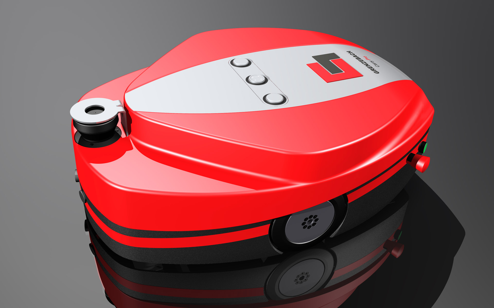
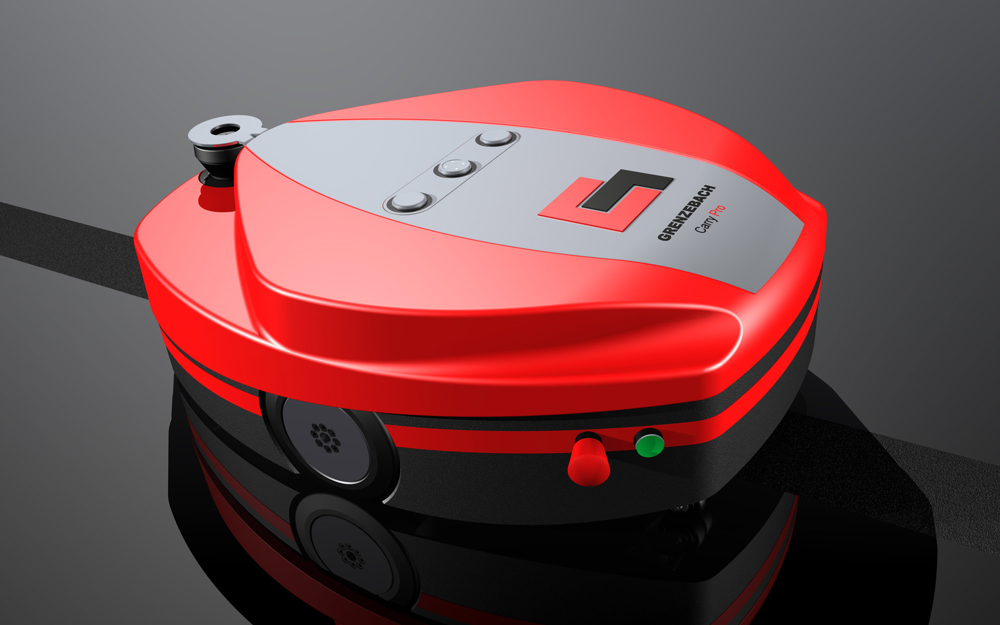
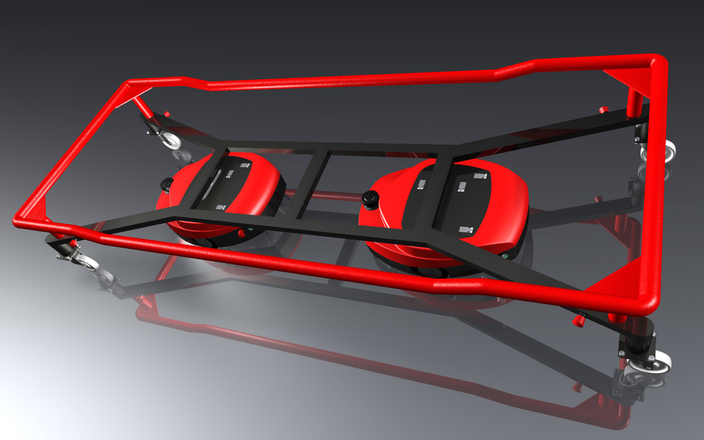
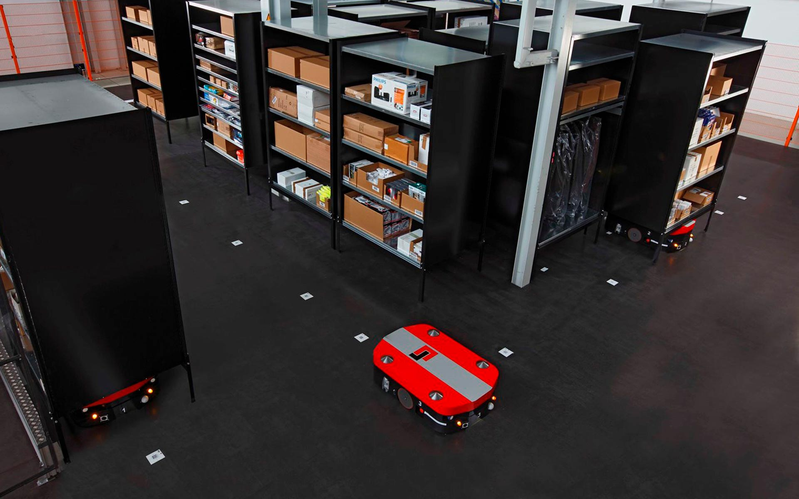

Grenzebach AGV Carry Pro
Automated Guided Vehicle
Grenzebach AGV Carry Pro
Fahrerloses Transportfahrzeug
The automated guided vehicle Carry Pro is a transport vehicle without driver which serves the material transport.
Besides, this floor-bounded vehicle drives contactlessly and automatically steered under a special pick-up
means, e. g. , an euro-palette with mobile base. Then the Carry Pro transports this load vehicle from
point A to point B by means of a master control. A scanner and further infrared security systems provide a
safe operation so that persons are recognized on time.
The automotive design of Carry Pro associates movement. It was tuned especially to economic efficiency
and service friendliness. For the solid floor platform with all its functional assemblies a solid metal
welding-construction was chosen, while the light, but still stable plastic cover is put on the body with
only a few steps.
Selić Industriedesign service: Design concept, design sketches, CAD design support, CAD freeform
modeling, design refinement, processing of design data for the engineering department
Das fahrerlose Transportfahrzeug Carry Pro ist ein fahrerloses Transportfahrzeug für den Materialtransport.
Das flurgebundene Fahrzeug fährt berührungslos und automatisch—gelenkt unter einem speziellen
Aufnahmemittel, z. B. einer Europalette mit mobilem Untergestell, hindurch. Anschließend transportiert
Carry Pro dieses Lastfahrzeug mithilfe einer übergeordneten Steuerung von A nach B. Ein Scanner und
weitere Infrarot-Sicherheitssysteme sorgen für einen sicheren Betrieb, sodass auch Personen rechtzeitig
erkannt werden.
Das Fahrzeugdesign des Carry Pro steht für Bewegung und wurde besonders auf Wirtschaftlichkeit und
Servicefreundlichkeit ausgelegt. Für die solide Bodenplattform mit allen Funktionsbaugruppen wurde eine
solide Metallschweißkonstruktion gewählt, während die leichte, aber dennoch stabile
Kunststoffverkleidung in wenigen Schritten auf die Karosserie aufgesetzt wird.
Selić Industriedesign Dienstleistung: Designkonzept, Designberatung, Designentwürfe, CAD-Design
Unterstützung, CAD-Freiform-Modellierung und Detailgestaltung, Design Verfeinerung, Aufbereitung von
Designdaten für die Konstruktion




Renderings © Selić Industriedesign
Images © Grenzebach GmbH